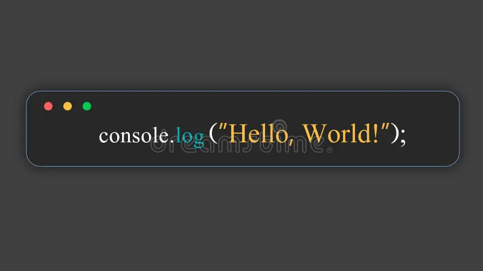

Características Principales
- Lenguaje interpretado que no necesita ser compilado para ejecutarse.
- Alta integración con HTML y CSS para la creación de interfaces interactivas.
- Soporte para programación asincrónica mediante Promesas y async/await.
- Ampliamente utilizado en desarrollo web front-end y back-end (Node.js).
- Gran ecosistema de bibliotecas y frameworks como React, Angular y Vue.
Tipos de datos
- Array: Colección ordenada de elementos.
- Function: Tipo de dato especial que representa funciones.
- Date: Representa fechas y horas.
- RegExp: Para trabajar con expresiones regulares.
- Map y Set: Estructuras modernas para almacenar datos únicos o pares clave-valor.
Ventajas y desventajas
- Ventajas:
- Actualizaciones constantes: Evoluciona rápidamente con nuevas características.
- Ejecutado en tiempo real: Las respuestas del usuario se procesan de inmediato.
- Interacción dinámica con la página web (DOM).
- Desventajas:
- Problemas de compatibilidad con navegadores antiguos.
- Difícil de mantener en proyectos muy grandes sin frameworks.
- La ejecución en el cliente puede generar inconsistencias si el navegador no soporta ciertas funciones.
Ejemplo de "Hola Mundo"
